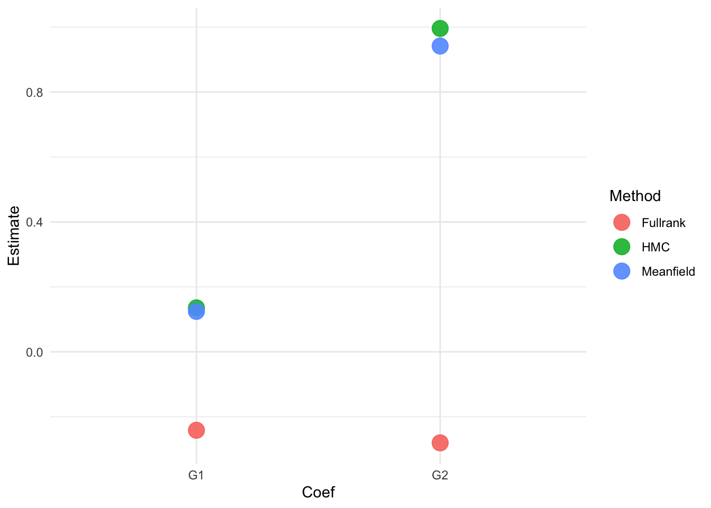
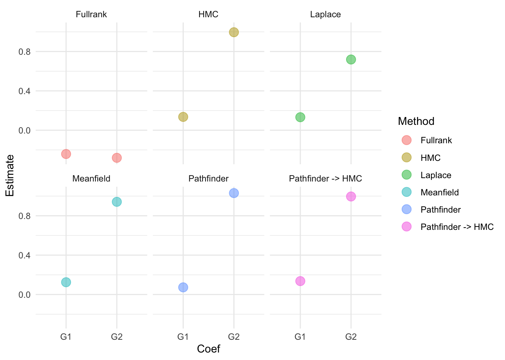

library(brms)
library(ggplot2)
library(tidyr)
library(dplyr)
set.seed(07082023)Non-MCMC methods
This document illustrates using different approximators in Stan, which is the program underlying various R-packages for Bayesian analysis, including brms.
Preliminaries
An example: Predicting students’ math performance.
To illustrate Bayesian convergence and checks, we will use a data set that is available from the UCI Machine Learning repository. The data set we use can be downloaded here and contains two data sets and a merged file. We will use the “student-mat.csv” file.
We will use linear regression analysis to predict the final math grade of Portugese students in secondary schools. First, we load in the data. Make sure the data is saved in your current working directory or change the path to the data in the code below.
dat <- read.table("student-mat.csv", sep = ";", header = TRUE)
head(dat) school sex age address famsize Pstatus Medu Fedu Mjob Fjob reason
1 GP F 18 U GT3 A 4 4 at_home teacher course
2 GP F 17 U GT3 T 1 1 at_home other course
3 GP F 15 U LE3 T 1 1 at_home other other
4 GP F 15 U GT3 T 4 2 health services home
5 GP F 16 U GT3 T 3 3 other other home
6 GP M 16 U LE3 T 4 3 services other reputation
guardian traveltime studytime failures schoolsup famsup paid activities
1 mother 2 2 0 yes no no no
2 father 1 2 0 no yes no no
3 mother 1 2 3 yes no yes no
4 mother 1 3 0 no yes yes yes
5 father 1 2 0 no yes yes no
6 mother 1 2 0 no yes yes yes
nursery higher internet romantic famrel freetime goout Dalc Walc health
1 yes yes no no 4 3 4 1 1 3
2 no yes yes no 5 3 3 1 1 3
3 yes yes yes no 4 3 2 2 3 3
4 yes yes yes yes 3 2 2 1 1 5
5 yes yes no no 4 3 2 1 2 5
6 yes yes yes no 5 4 2 1 2 5
absences G1 G2 G3
1 6 5 6 6
2 4 5 5 6
3 10 7 8 10
4 2 15 14 15
5 4 6 10 10
6 10 15 15 15We will predict the math grade at the third period G3 based on all other available data and we will use a horseshoe prior to help induce some sparsity. This is a shrinkage priors that attempts to (mainly) shrink non-important predictors. For more information on the horseshoe prior see day 4 of this course and references 1 2.
start_time <- Sys.time()
hs_prior <- set_prior(horseshoe(df = 3)) # select prior
fit1 <- brm(G3 ~ ., data = dat, algorithm = "sampling", prior = hs_prior, seed = 123)Compiling Stan program...Start sampling
SAMPLING FOR MODEL 'anon_model' NOW (CHAIN 1).
Chain 1:
Chain 1: Gradient evaluation took 5.7e-05 seconds
Chain 1: 1000 transitions using 10 leapfrog steps per transition would take 0.57 seconds.
Chain 1: Adjust your expectations accordingly!
Chain 1:
Chain 1:
Chain 1: Iteration: 1 / 2000 [ 0%] (Warmup)
Chain 1: Iteration: 200 / 2000 [ 10%] (Warmup)
Chain 1: Iteration: 400 / 2000 [ 20%] (Warmup)
Chain 1: Iteration: 600 / 2000 [ 30%] (Warmup)
Chain 1: Iteration: 800 / 2000 [ 40%] (Warmup)
Chain 1: Iteration: 1000 / 2000 [ 50%] (Warmup)
Chain 1: Iteration: 1001 / 2000 [ 50%] (Sampling)
Chain 1: Iteration: 1200 / 2000 [ 60%] (Sampling)
Chain 1: Iteration: 1400 / 2000 [ 70%] (Sampling)
Chain 1: Iteration: 1600 / 2000 [ 80%] (Sampling)
Chain 1: Iteration: 1800 / 2000 [ 90%] (Sampling)
Chain 1: Iteration: 2000 / 2000 [100%] (Sampling)
Chain 1:
Chain 1: Elapsed Time: 1.451 seconds (Warm-up)
Chain 1: 1.386 seconds (Sampling)
Chain 1: 2.837 seconds (Total)
Chain 1:
SAMPLING FOR MODEL 'anon_model' NOW (CHAIN 2).
Chain 2:
Chain 2: Gradient evaluation took 1.3e-05 seconds
Chain 2: 1000 transitions using 10 leapfrog steps per transition would take 0.13 seconds.
Chain 2: Adjust your expectations accordingly!
Chain 2:
Chain 2:
Chain 2: Iteration: 1 / 2000 [ 0%] (Warmup)
Chain 2: Iteration: 200 / 2000 [ 10%] (Warmup)
Chain 2: Iteration: 400 / 2000 [ 20%] (Warmup)
Chain 2: Iteration: 600 / 2000 [ 30%] (Warmup)
Chain 2: Iteration: 800 / 2000 [ 40%] (Warmup)
Chain 2: Iteration: 1000 / 2000 [ 50%] (Warmup)
Chain 2: Iteration: 1001 / 2000 [ 50%] (Sampling)
Chain 2: Iteration: 1200 / 2000 [ 60%] (Sampling)
Chain 2: Iteration: 1400 / 2000 [ 70%] (Sampling)
Chain 2: Iteration: 1600 / 2000 [ 80%] (Sampling)
Chain 2: Iteration: 1800 / 2000 [ 90%] (Sampling)
Chain 2: Iteration: 2000 / 2000 [100%] (Sampling)
Chain 2:
Chain 2: Elapsed Time: 1.605 seconds (Warm-up)
Chain 2: 1.391 seconds (Sampling)
Chain 2: 2.996 seconds (Total)
Chain 2:
SAMPLING FOR MODEL 'anon_model' NOW (CHAIN 3).
Chain 3:
Chain 3: Gradient evaluation took 1.2e-05 seconds
Chain 3: 1000 transitions using 10 leapfrog steps per transition would take 0.12 seconds.
Chain 3: Adjust your expectations accordingly!
Chain 3:
Chain 3:
Chain 3: Iteration: 1 / 2000 [ 0%] (Warmup)
Chain 3: Iteration: 200 / 2000 [ 10%] (Warmup)
Chain 3: Iteration: 400 / 2000 [ 20%] (Warmup)
Chain 3: Iteration: 600 / 2000 [ 30%] (Warmup)
Chain 3: Iteration: 800 / 2000 [ 40%] (Warmup)
Chain 3: Iteration: 1000 / 2000 [ 50%] (Warmup)
Chain 3: Iteration: 1001 / 2000 [ 50%] (Sampling)
Chain 3: Iteration: 1200 / 2000 [ 60%] (Sampling)
Chain 3: Iteration: 1400 / 2000 [ 70%] (Sampling)
Chain 3: Iteration: 1600 / 2000 [ 80%] (Sampling)
Chain 3: Iteration: 1800 / 2000 [ 90%] (Sampling)
Chain 3: Iteration: 2000 / 2000 [100%] (Sampling)
Chain 3:
Chain 3: Elapsed Time: 1.356 seconds (Warm-up)
Chain 3: 1.464 seconds (Sampling)
Chain 3: 2.82 seconds (Total)
Chain 3:
SAMPLING FOR MODEL 'anon_model' NOW (CHAIN 4).
Chain 4:
Chain 4: Gradient evaluation took 1.9e-05 seconds
Chain 4: 1000 transitions using 10 leapfrog steps per transition would take 0.19 seconds.
Chain 4: Adjust your expectations accordingly!
Chain 4:
Chain 4:
Chain 4: Iteration: 1 / 2000 [ 0%] (Warmup)
Chain 4: Iteration: 200 / 2000 [ 10%] (Warmup)
Chain 4: Iteration: 400 / 2000 [ 20%] (Warmup)
Chain 4: Iteration: 600 / 2000 [ 30%] (Warmup)
Chain 4: Iteration: 800 / 2000 [ 40%] (Warmup)
Chain 4: Iteration: 1000 / 2000 [ 50%] (Warmup)
Chain 4: Iteration: 1001 / 2000 [ 50%] (Sampling)
Chain 4: Iteration: 1200 / 2000 [ 60%] (Sampling)
Chain 4: Iteration: 1400 / 2000 [ 70%] (Sampling)
Chain 4: Iteration: 1600 / 2000 [ 80%] (Sampling)
Chain 4: Iteration: 1800 / 2000 [ 90%] (Sampling)
Chain 4: Iteration: 2000 / 2000 [100%] (Sampling)
Chain 4:
Chain 4: Elapsed Time: 1.443 seconds (Warm-up)
Chain 4: 1.403 seconds (Sampling)
Chain 4: 2.846 seconds (Total)
Chain 4: Warning: There were 10 divergent transitions after warmup. See
https://mc-stan.org/misc/warnings.html#divergent-transitions-after-warmup
to find out why this is a problem and how to eliminate them.Warning: Examine the pairs() plot to diagnose sampling problemssummary(fit1)Warning: There were 10 divergent transitions after warmup. Increasing
adapt_delta above 0.8 may help. See
http://mc-stan.org/misc/warnings.html#divergent-transitions-after-warmup Family: gaussian
Links: mu = identity; sigma = identity
Formula: G3 ~ school + sex + age + address + famsize + Pstatus + Medu + Fedu + Mjob + Fjob + reason + guardian + traveltime + studytime + failures + schoolsup + famsup + paid + activities + nursery + higher + internet + romantic + famrel + freetime + goout + Dalc + Walc + health + absences + G1 + G2
Data: dat (Number of observations: 395)
Draws: 4 chains, each with iter = 2000; warmup = 1000; thin = 1;
total post-warmup draws = 4000
Regression Coefficients:
Estimate Est.Error l-95% CI u-95% CI Rhat Bulk_ESS Tail_ESS
Intercept -1.30 1.54 -4.11 1.84 1.00 2771 2635
schoolMS 0.05 0.15 -0.17 0.44 1.00 4830 3435
sexM 0.03 0.11 -0.16 0.29 1.00 5483 3476
age -0.11 0.08 -0.29 0.02 1.00 2310 2817
addressU -0.00 0.10 -0.23 0.21 1.00 5755 3592
famsizeLE3 0.01 0.10 -0.19 0.25 1.00 6375 3768
PstatusT -0.03 0.13 -0.36 0.19 1.00 6138 3373
Medu 0.02 0.07 -0.10 0.18 1.00 5128 3720
Fedu -0.02 0.07 -0.18 0.10 1.00 5352 3702
Mjobhealth -0.00 0.12 -0.28 0.27 1.00 5837 3583
Mjobother 0.01 0.10 -0.20 0.23 1.00 5285 3504
Mjobservices 0.01 0.10 -0.21 0.24 1.00 6833 3439
Mjobteacher 0.00 0.12 -0.27 0.25 1.00 5466 3756
Fjobhealth 0.04 0.16 -0.21 0.47 1.00 4864 3265
Fjobother 0.04 0.11 -0.16 0.33 1.00 4308 2931
Fjobservices -0.10 0.15 -0.50 0.10 1.00 3852 3477
Fjobteacher -0.00 0.14 -0.31 0.30 1.00 5094 2890
reasonhome -0.07 0.13 -0.41 0.10 1.00 4931 3116
reasonother 0.04 0.14 -0.19 0.41 1.00 5940 3685
reasonreputation 0.03 0.11 -0.16 0.30 1.00 5782 3754
guardianmother 0.06 0.12 -0.12 0.36 1.00 5184 3763
guardianother -0.04 0.14 -0.39 0.21 1.00 4341 3796
traveltime 0.04 0.09 -0.11 0.26 1.00 5495 3730
studytime -0.05 0.08 -0.25 0.08 1.00 5032 3619
failures -0.08 0.11 -0.34 0.07 1.00 4153 3168
schoolsupyes 0.07 0.15 -0.15 0.48 1.00 4186 3322
famsupyes 0.03 0.11 -0.16 0.28 1.00 5069 3293
paidyes 0.02 0.10 -0.16 0.25 1.00 6206 3477
activitiesyes -0.10 0.14 -0.45 0.08 1.00 3334 2979
nurseryyes -0.03 0.11 -0.32 0.18 1.00 5684 3251
higheryes 0.03 0.15 -0.25 0.42 1.00 5188 3717
internetyes -0.04 0.12 -0.34 0.16 1.00 5800 3531
romanticyes -0.10 0.14 -0.45 0.09 1.00 3837 3151
famrel 0.26 0.12 0.01 0.49 1.00 2095 1162
freetime 0.03 0.06 -0.09 0.18 1.00 4813 3673
goout 0.01 0.06 -0.10 0.14 1.00 6175 3668
Dalc -0.01 0.07 -0.19 0.14 1.00 5203 3923
Walc 0.05 0.07 -0.05 0.22 1.00 4017 3649
health 0.03 0.05 -0.06 0.15 1.00 4154 3454
absences 0.04 0.01 0.01 0.06 1.00 2900 2425
G1 0.14 0.06 0.01 0.25 1.00 3395 1644
G2 1.00 0.05 0.89 1.10 1.00 3606 2510
Further Distributional Parameters:
Estimate Est.Error l-95% CI u-95% CI Rhat Bulk_ESS Tail_ESS
sigma 1.88 0.07 1.75 2.03 1.00 5601 2874
Draws were sampled using sampling(NUTS). For each parameter, Bulk_ESS
and Tail_ESS are effective sample size measures, and Rhat is the potential
scale reduction factor on split chains (at convergence, Rhat = 1).end_time <- Sys.time()
runtime1 <- end_time - start_timeNote that here, we rely on the default hyperparameter settings in brms.
Non-MCMC methods
By default brms uses HMC, where the NUTS algorithms 3 is used to help with the sampling. In this case sampling is quite quick, but let’s say we are really busy and we want the model estimates even quicker.
In the mean field method in Stan independent Gaussians are assumed as the distributions for our latent variables in the unconstrained space. The last part might be a bit confusing, but imagine estimating a variance term with a Gaussian. We would run into the problem that there would be some density below zero, and this is impossible for a variance term. So, we could first transform the variable to become unconstrained (e.g., take the log) then estimate the Gaussian in this unconstrained space and subsequently back-transform the parameter to the original space. See footnote 4 for more information.
start_time <- Sys.time()
fit2 <- brm(G3 ~ ., data = dat, algorithm = "meanfield", prior = hs_prior, seed = 123)Compiling Stan program...Start samplingChain 1: ------------------------------------------------------------
Chain 1: EXPERIMENTAL ALGORITHM:
Chain 1: This procedure has not been thoroughly tested and may be unstable
Chain 1: or buggy. The interface is subject to change.
Chain 1: ------------------------------------------------------------
Chain 1:
Chain 1:
Chain 1:
Chain 1: Gradient evaluation took 5.1e-05 seconds
Chain 1: 1000 transitions using 10 leapfrog steps per transition would take 0.51 seconds.
Chain 1: Adjust your expectations accordingly!
Chain 1:
Chain 1:
Chain 1: Begin eta adaptation.
Chain 1: Iteration: 1 / 250 [ 0%] (Adaptation)
Chain 1: Iteration: 50 / 250 [ 20%] (Adaptation)
Chain 1: Iteration: 100 / 250 [ 40%] (Adaptation)
Chain 1: Iteration: 150 / 250 [ 60%] (Adaptation)
Chain 1: Iteration: 200 / 250 [ 80%] (Adaptation)
Chain 1: Success! Found best value [eta = 1] earlier than expected.
Chain 1:
Chain 1: Begin stochastic gradient ascent.
Chain 1: iter ELBO delta_ELBO_mean delta_ELBO_med notes
Chain 1: 100 -4787.992 1.000 1.000
Chain 1: 200 -1409.481 1.698 2.397
Chain 1: 300 -1063.746 1.361 2.397
Chain 1: 400 -904.832 0.250 0.325
Chain 1: 500 -866.982 0.110 0.176
Chain 1: 600 -868.700 0.023 0.044
Chain 1: 700 -861.113 0.005 0.009 MEAN ELBO CONVERGED MEDIAN ELBO CONVERGED
Chain 1:
Chain 1: Drawing a sample of size 1000 from the approximate posterior...
Chain 1: COMPLETED.Warning: Pareto k diagnostic value is 2. Resampling is disabled. Decreasing
tol_rel_obj may help if variational algorithm has terminated prematurely.
Otherwise consider using sampling instead.summary(fit2) Family: gaussian
Links: mu = identity; sigma = identity
Formula: G3 ~ school + sex + age + address + famsize + Pstatus + Medu + Fedu + Mjob + Fjob + reason + guardian + traveltime + studytime + failures + schoolsup + famsup + paid + activities + nursery + higher + internet + romantic + famrel + freetime + goout + Dalc + Walc + health + absences + G1 + G2
Data: dat (Number of observations: 395)
Draws: 1 chains, each with iter = 1000; warmup = 0; thin = 1;
total post-warmup draws = 1000
Regression Coefficients:
Estimate Est.Error l-95% CI u-95% CI Rhat Bulk_ESS Tail_ESS
Intercept -0.60 1.91 -3.70 3.88 1.00 1026 982
schoolMS 0.02 0.17 -0.29 0.38 1.00 955 881
sexM 0.03 0.14 -0.20 0.34 1.00 1081 813
age -0.09 0.09 -0.35 0.02 1.00 965 934
addressU -0.02 0.09 -0.25 0.13 1.00 1021 906
famsizeLE3 0.02 0.17 -0.28 0.36 1.00 1043 1014
PstatusT -0.02 0.13 -0.29 0.19 1.00 992 950
Medu 0.02 0.07 -0.09 0.17 1.00 911 706
Fedu -0.00 0.07 -0.13 0.12 1.00 1009 797
Mjobhealth 0.00 0.27 -0.55 0.51 1.00 870 879
Mjobother 0.01 0.16 -0.28 0.32 1.00 1047 944
Mjobservices 0.00 0.11 -0.24 0.23 1.00 976 901
Mjobteacher 0.01 0.18 -0.26 0.31 1.00 995 919
Fjobhealth 0.02 0.26 -0.36 0.42 1.00 931 956
Fjobother 0.02 0.07 -0.09 0.20 1.00 981 745
Fjobservices -0.04 0.15 -0.37 0.19 1.00 1030 869
Fjobteacher 0.01 0.16 -0.25 0.33 1.00 873 852
reasonhome -0.04 0.11 -0.28 0.13 1.00 1065 979
reasonother 0.00 0.13 -0.25 0.28 1.00 993 689
reasonreputation 0.02 0.12 -0.19 0.31 1.00 946 823
guardianmother 0.04 0.13 -0.14 0.34 1.00 955 1026
guardianother -0.02 0.17 -0.34 0.24 1.00 931 950
traveltime 0.02 0.11 -0.15 0.24 1.00 921 840
studytime -0.02 0.09 -0.21 0.12 1.00 1101 941
failures -0.10 0.18 -0.51 0.08 1.01 791 900
schoolsupyes 0.02 0.13 -0.19 0.28 1.00 1137 1065
famsupyes 0.01 0.11 -0.20 0.24 1.00 996 997
paidyes 0.02 0.10 -0.15 0.25 1.00 937 908
activitiesyes -0.07 0.18 -0.46 0.14 1.00 1021 983
nurseryyes -0.03 0.14 -0.35 0.22 1.00 1003 1017
higheryes 0.00 0.16 -0.34 0.35 1.00 1050 982
internetyes -0.02 0.16 -0.37 0.25 1.00 1040 973
romanticyes -0.05 0.10 -0.28 0.09 1.00 926 988
famrel 0.21 0.15 0.02 0.55 1.00 966 944
freetime 0.02 0.07 -0.10 0.19 1.00 1139 1072
goout 0.01 0.06 -0.13 0.13 1.00 1017 847
Dalc -0.00 0.15 -0.26 0.34 1.00 967 1025
Walc 0.03 0.11 -0.12 0.23 1.00 1058 983
health 0.01 0.06 -0.11 0.15 1.00 969 1021
absences 0.03 0.01 0.01 0.06 1.00 978 885
G1 0.12 0.04 0.06 0.21 1.00 1003 909
G2 0.94 0.05 0.86 1.03 1.00 981 841
Further Distributional Parameters:
Estimate Est.Error l-95% CI u-95% CI Rhat Bulk_ESS Tail_ESS
sigma 1.88 0.07 1.75 2.01 1.00 1126 979
Draws were sampled using variational(meanfield). end_time <- Sys.time()
runtime2 <- end_time - start_timeAlternatively, we can use the full-rank method that assumes a joint Gaussian for the latent variables. This might sound like an advantage, but note that this method models a covariance matrix with p * p elements, whereas meanfield only models the diagonal so p * 1. We will thus run into scaling problems when p (the number of latent variables) is large. The method is not very stable, try changing the seed to see what happens.
start_time <- Sys.time()
fit3 <- brm(G3 ~ ., data = dat, algorithm = "fullrank", prior = hs_prior, seed = 123)Compiling Stan program...Start samplingChain 1: ------------------------------------------------------------
Chain 1: EXPERIMENTAL ALGORITHM:
Chain 1: This procedure has not been thoroughly tested and may be unstable
Chain 1: or buggy. The interface is subject to change.
Chain 1: ------------------------------------------------------------
Chain 1:
Chain 1:
Chain 1:
Chain 1: Gradient evaluation took 5.8e-05 seconds
Chain 1: 1000 transitions using 10 leapfrog steps per transition would take 0.58 seconds.
Chain 1: Adjust your expectations accordingly!
Chain 1:
Chain 1:
Chain 1: Begin eta adaptation.
Chain 1: Iteration: 1 / 250 [ 0%] (Adaptation)
Chain 1: Iteration: 50 / 250 [ 20%] (Adaptation)
Chain 1: Iteration: 100 / 250 [ 40%] (Adaptation)
Chain 1: Iteration: 150 / 250 [ 60%] (Adaptation)
Chain 1: Iteration: 200 / 250 [ 80%] (Adaptation)
Chain 1: Iteration: 250 / 250 [100%] (Adaptation)
Chain 1: Success! Found best value [eta = 0.1].
Chain 1:
Chain 1: Begin stochastic gradient ascent.
Chain 1: iter ELBO delta_ELBO_mean delta_ELBO_med notes
Chain 1: 100 -1570572.728 1.000 1.000
Chain 1: 200 -2509069.245 0.687 1.000
Chain 1: 300 -1147790.101 0.780 1.186
Chain 1: 400 -834083.132 0.781 1.186
Chain 1: 500 -5679402.311 0.615 0.853
Chain 1: 600 -1941955.052 1.389 1.925
Chain 1: 700 -801479.661 1.674 1.925
Chain 1: 800 -3334258.175 1.091 1.423
Chain 1: 900 -1344409.066 1.120 1.480
Chain 1: 1000 -1402021.976 0.761 1.480
Chain 1: 1100 -2747478.626 0.265 0.490
Chain 1: 1200 -718264.802 1.657 2.825 MAY BE DIVERGING... INSPECT ELBO
Chain 1: 1300 -572418.060 1.540 2.825 MAY BE DIVERGING... INSPECT ELBO
Chain 1: 1400 -850924.894 0.291 0.327
Chain 1: 1500 -655335.368 0.313 0.327
Chain 1: 1600 -1619042.102 0.447 0.595 MAY BE DIVERGING... INSPECT ELBO
Chain 1: 1700 -860072.591 0.739 0.882 MAY BE DIVERGING... INSPECT ELBO
Chain 1: 1800 -969877.707 0.498 0.882 MAY BE DIVERGING... INSPECT ELBO
Chain 1: 1900 -460214.634 0.610 1.107 MAY BE DIVERGING... INSPECT ELBO
Chain 1: 2000 -835518.060 0.778 1.107 MAY BE DIVERGING... INSPECT ELBO
Chain 1: Informational Message: The maximum number of iterations is reached! The algorithm may not have converged.
Chain 1: This variational approximation is not guaranteed to be meaningful.
Chain 1:
Chain 1: Drawing a sample of size 1000 from the approximate posterior...
Chain 1: COMPLETED.Warning: Pareto k diagnostic value is Inf. Resampling is disabled. Decreasing
tol_rel_obj may help if variational algorithm has terminated prematurely.
Otherwise consider using sampling instead.summary(fit3) Family: gaussian
Links: mu = identity; sigma = identity
Formula: G3 ~ school + sex + age + address + famsize + Pstatus + Medu + Fedu + Mjob + Fjob + reason + guardian + traveltime + studytime + failures + schoolsup + famsup + paid + activities + nursery + higher + internet + romantic + famrel + freetime + goout + Dalc + Walc + health + absences + G1 + G2
Data: dat (Number of observations: 395)
Draws: 1 chains, each with iter = 1000; warmup = 0; thin = 1;
total post-warmup draws = 1000
Regression Coefficients:
Estimate Est.Error l-95% CI u-95% CI Rhat Bulk_ESS Tail_ESS
Intercept -0.95 11.97 -22.98 25.49 1.00 849 903
schoolMS 0.10 0.35 -0.42 0.87 1.00 1068 1069
sexM 0.45 0.84 -1.08 2.43 1.00 997 873
age -0.11 0.45 -1.14 0.55 1.00 974 941
addressU 0.90 0.85 -0.18 3.11 1.00 1045 797
famsizeLE3 0.11 0.41 -0.52 1.07 1.00 930 689
PstatusT -0.05 0.75 -1.70 1.44 1.00 912 870
Medu 0.49 0.74 -0.56 2.43 1.00 901 944
Fedu 0.66 0.64 0.00 2.24 1.00 663 748
Mjobhealth -0.10 0.56 -1.50 1.01 1.00 872 973
Mjobother 0.17 0.53 -0.82 1.40 1.00 972 890
Mjobservices 0.54 0.63 0.00 2.33 1.00 898 941
Mjobteacher -0.56 0.63 -2.14 0.10 1.00 1027 743
Fjobhealth -0.27 0.43 -1.47 0.05 1.00 988 962
Fjobother -0.04 0.22 -0.52 0.29 1.00 1062 916
Fjobservices -0.88 0.84 -2.83 0.25 1.00 905 956
Fjobteacher 0.24 0.68 -1.09 1.76 1.00 1102 981
reasonhome 0.02 0.34 -0.60 0.83 1.00 957 945
reasonother -0.25 0.47 -1.51 0.43 1.00 924 901
reasonreputation 0.44 0.80 -0.95 2.37 1.00 962 919
guardianmother 0.55 0.76 -0.75 2.29 1.00 1009 918
guardianother 0.06 0.23 -0.31 0.65 1.00 882 986
traveltime 0.30 0.41 -0.09 1.46 1.00 924 952
studytime 0.28 0.42 -0.08 1.43 1.00 943 1021
failures 0.47 0.93 -1.02 2.54 1.00 962 881
schoolsupyes -0.01 0.24 -0.57 0.49 1.00 953 1012
famsupyes -0.30 0.53 -1.74 0.34 1.00 912 907
paidyes -0.03 0.50 -0.96 1.09 1.00 901 906
activitiesyes -0.25 0.41 -1.32 0.29 1.00 992 1003
nurseryyes -0.37 0.63 -1.89 0.67 1.00 995 903
higheryes -0.19 0.85 -1.95 1.42 1.00 660 799
internetyes 0.20 0.75 -1.09 1.95 1.00 1020 1071
romanticyes 0.08 0.32 -0.49 0.90 1.00 861 916
famrel 0.79 0.78 -0.16 2.79 1.00 949 751
freetime 0.13 0.25 -0.10 0.79 1.00 782 1023
goout 0.08 0.35 -0.56 0.91 1.00 1063 978
Dalc -0.71 0.75 -2.69 0.10 1.00 958 879
Walc 1.24 1.05 -0.13 3.72 1.00 1122 725
health -0.16 0.27 -0.82 0.05 1.00 1106 908
absences -0.40 0.68 -1.88 0.70 1.00 813 908
G1 -0.24 0.36 -1.17 0.03 1.00 896 820
G2 -0.28 0.44 -1.58 0.25 1.00 1013 912
Further Distributional Parameters:
Estimate Est.Error l-95% CI u-95% CI Rhat Bulk_ESS Tail_ESS
sigma 0.66 0.62 0.10 2.24 1.00 957 944
Draws were sampled using variational(fullrank). end_time <- Sys.time()
runtime3 <- end_time - start_timeThe running time for the different models is:
# A tibble: 3 × 2
method run_time
<chr> <drtn>
1 HMC 38.41162 secs
2 Meanfield 23.35223 secs
3 Fullrank 24.01643 secsThe Non-MCMC methods are a bit quicker. Note that a very large part of this is due to the compilation of the model and not the estimation itself.
Let’s compare the coefficients for the previous test scores in period 1 G1 and period 2 G2:
df_plot = tibble(
Method = c(rep("HMC", 2), rep("Meanfield", 2), rep("Fullrank", 2)),
Coef = rep(c("G1", "G2"), 3),
Estimate = c(
summary(fit1)$fixed[41:42, ]$Estimate,
summary(fit2)$fixed[41:42, ]$Estimate,
summary(fit3)$fixed[41:42, ]$Estimate
)
) Warning: There were 10 divergent transitions after warmup. Increasing
adapt_delta above 0.8 may help. See
http://mc-stan.org/misc/warnings.html#divergent-transitions-after-warmupdf_plot %>%
ggplot(aes(x = Coef, y = Estimate, color = Method)) +
geom_point(size = 5, alpha = 0.9) +
theme_minimal()
We see that HMC and Meanfield obtain comparable results, while Fullrank is quite far off.
Running models direclty in CMDSTANR
library(cmdstanr)This is cmdstanr version 0.8.1- CmdStanR documentation and vignettes: mc-stan.org/cmdstanr- CmdStan path: /Users/Erp00018/.cmdstan/cmdstan-2.36.0- CmdStan version: 2.36.0For some methods it can be easier to run the model with cmdstanr This can feel a bit daunting, since cmdstanr does not work with specifying formulas like brm or lm. Instead we need to write the model in Stan. Luckily for us the brms package has a function stancode, to obtain a stan program given a formula:
# obtain model code
model_code <- stancode(G3 ~ ., family = gaussian(), data = dat, algorithm = "sampling", prior = hs_prior)
model_code// generated with brms 2.22.0
functions {
/* Efficient computation of the horseshoe scale parameters
* see Appendix C.1 in https://projecteuclid.org/euclid.ejs/1513306866
* Args:
* lambda: local shrinkage parameters
* tau: global shrinkage parameter
* c2: slap regularization parameter
* Returns:
* scale parameter vector of the horseshoe prior
*/
vector scales_horseshoe(vector lambda, real tau, real c2) {
int K = rows(lambda);
vector[K] lambda2 = square(lambda);
vector[K] lambda_tilde = sqrt(c2 * lambda2 ./ (c2 + tau^2 * lambda2));
return lambda_tilde * tau;
}
}
data {
int<lower=1> N; // total number of observations
vector[N] Y; // response variable
int<lower=1> K; // number of population-level effects
matrix[N, K] X; // population-level design matrix
int<lower=1> Kc; // number of population-level effects after centering
int<lower=1> Kscales; // number of local scale parameters
// data for the horseshoe prior
real<lower=0> hs_df; // local degrees of freedom
real<lower=0> hs_df_global; // global degrees of freedom
real<lower=0> hs_df_slab; // slab degrees of freedom
real<lower=0> hs_scale_global; // global prior scale
real<lower=0> hs_scale_slab; // slab prior scale
int prior_only; // should the likelihood be ignored?
}
transformed data {
matrix[N, Kc] Xc; // centered version of X without an intercept
vector[Kc] means_X; // column means of X before centering
for (i in 2:K) {
means_X[i - 1] = mean(X[, i]);
Xc[, i - 1] = X[, i] - means_X[i - 1];
}
}
parameters {
vector[Kc] zb; // unscaled coefficients
real Intercept; // temporary intercept for centered predictors
// horseshoe shrinkage parameters
real<lower=0> hs_global; // global shrinkage parameter
real<lower=0> hs_slab; // slab regularization parameter
vector<lower=0>[Kscales] hs_local; // local parameters for the horseshoe prior
real<lower=0> sigma; // dispersion parameter
}
transformed parameters {
vector[Kc] b; // scaled coefficients
vector<lower=0>[Kc] sdb; // SDs of the coefficients
vector<lower=0>[Kscales] scales; // local horseshoe scale parameters
real lprior = 0; // prior contributions to the log posterior
// compute horseshoe scale parameters
scales = scales_horseshoe(hs_local, hs_global, hs_scale_slab^2 * hs_slab);
sdb = scales[(1):(Kc)];
b = zb .* sdb; // scale coefficients
lprior += student_t_lpdf(Intercept | 3, 11, 4.4);
lprior += student_t_lpdf(hs_global | hs_df_global, 0, hs_scale_global * sigma)
- 1 * log(0.5);
lprior += inv_gamma_lpdf(hs_slab | 0.5 * hs_df_slab, 0.5 * hs_df_slab);
lprior += student_t_lpdf(sigma | 3, 0, 4.4)
- 1 * student_t_lccdf(0 | 3, 0, 4.4);
}
model {
// likelihood including constants
if (!prior_only) {
target += normal_id_glm_lpdf(Y | Xc, Intercept, b, sigma);
}
// priors including constants
target += lprior;
target += std_normal_lpdf(zb);
target += student_t_lpdf(hs_local | hs_df, 0, 1)
- rows(hs_local) * log(0.5);
}
generated quantities {
// actual population-level intercept
real b_Intercept = Intercept - dot_product(means_X, b);
}This saves us a considerable amount of work. cmdstanr also has a specific way it wants the data, namely a list with the arguments in the data block above. This can be obtained with the standata function. And finally, we need to compile the model. The advantage of using cmdstanr is that it offers more flexibility.
# obtain data in the right format
model_data <- standata(G3 ~ ., family = gaussian(), data = dat, algorithm = "sampling", prior = hs_prior)
str(model_data)List of 12
$ N : int 395
$ Y : int [1:395(1d)] 6 6 10 15 10 15 11 6 19 15 ...
$ K : int 42
$ Kc : num 41
$ X : num [1:395, 1:42] 1 1 1 1 1 1 1 1 1 1 ...
..- attr(*, "dimnames")=List of 2
.. ..$ : chr [1:395] "1" "2" "3" "4" ...
.. ..$ : chr [1:42] "Intercept" "schoolMS" "sexM" "age" ...
..- attr(*, "assign")= int [1:42] 0 1 2 3 4 5 6 7 8 9 ...
..- attr(*, "contrasts")=List of 17
.. ..$ school : chr "contr.treatment"
.. ..$ sex : chr "contr.treatment"
.. ..$ address : chr "contr.treatment"
.. ..$ famsize : chr "contr.treatment"
.. ..$ Pstatus : chr "contr.treatment"
.. ..$ Mjob : chr "contr.treatment"
.. ..$ Fjob : chr "contr.treatment"
.. ..$ reason : chr "contr.treatment"
.. ..$ guardian : chr "contr.treatment"
.. ..$ schoolsup : chr "contr.treatment"
.. ..$ famsup : chr "contr.treatment"
.. ..$ paid : chr "contr.treatment"
.. ..$ activities: chr "contr.treatment"
.. ..$ nursery : chr "contr.treatment"
.. ..$ higher : chr "contr.treatment"
.. ..$ internet : chr "contr.treatment"
.. ..$ romantic : chr "contr.treatment"
$ Kscales : num 41
$ hs_df : num 3
$ hs_df_global : num 1
$ hs_df_slab : num 4
$ hs_scale_global: num 1
$ hs_scale_slab : num 2
$ prior_only : int 0
- attr(*, "class")= chr [1:2] "standata" "list"# compile the model
m_compiled <- cmdstanr::cmdstan_model(cmdstanr::write_stan_file(model_code))Below we run two extra models: a Laplace approximation and a Pathfinder 5 approximation of which the results are subsequently used as initial values for HMC:
# laplace
model_lp <- m_compiled$laplace(data = model_data, seed = 123)Initial log joint probability = -1.00441e+06
Iter log prob ||dx|| ||grad|| alpha alpha0 # evals Notes
Exception: student_t_lpdf: Scale parameter is inf, but must be positive finite! (in '/var/folders/_n/t9lx5kvs1qbgkx8nb8cxfy4r0000gn/T/RtmpAipoiE/model-249e952e8a0.stan', line 61, column 2 to line 62, column 19)
Exception: student_t_lpdf: Scale parameter is inf, but must be positive finite! (in '/var/folders/_n/t9lx5kvs1qbgkx8nb8cxfy4r0000gn/T/RtmpAipoiE/model-249e952e8a0.stan', line 61, column 2 to line 62, column 19)
Error evaluating model log probability: Non-finite function evaluation.
Exception: normal_id_glm_lpdf: Matrix of independent variables is inf, but must be finite! (in '/var/folders/_n/t9lx5kvs1qbgkx8nb8cxfy4r0000gn/T/RtmpAipoiE/model-249e952e8a0.stan', line 70, column 4 to column 62)
Exception: normal_id_glm_lpdf: Matrix of independent variables is inf, but must be finite! (in '/var/folders/_n/t9lx5kvs1qbgkx8nb8cxfy4r0000gn/T/RtmpAipoiE/model-249e952e8a0.stan', line 70, column 4 to column 62)
99 -881.19 0.589956 43.4094 1 1 174
Iter log prob ||dx|| ||grad|| alpha alpha0 # evals Notes
199 -872.053 0.0088016 3.96852 0.4371 0.4371 289
Iter log prob ||dx|| ||grad|| alpha alpha0 # evals Notes
299 -871.982 0.00227751 0.779228 1 1 401
Iter log prob ||dx|| ||grad|| alpha alpha0 # evals Notes
390 -871.98 6.23698e-05 0.0574599 1 1 506
Optimization terminated normally:
Convergence detected: relative gradient magnitude is below tolerance
Finished in 0.2 seconds.
Calculating Hessian
Calculating inverse of Cholesky factor
Generating draws
iteration: 0
iteration: 100
iteration: 200
iteration: 300
iteration: 400
iteration: 500
iteration: 600
iteration: 700
iteration: 800
iteration: 900
Finished in 0.1 seconds.# pathfinder
model_pf <- m_compiled$pathfinder(data = model_data, seed = 123)Path [1] :Initial log joint density = -1004410.592741
Exception: student_t_lpdf: Scale parameter is inf, but must be positive finite! (in '/var/folders/_n/t9lx5kvs1qbgkx8nb8cxfy4r0000gn/T/RtmpAipoiE/model-249e952e8a0.stan', line 61, column 2 to line 62, column 19)
Exception: student_t_lpdf: Scale parameter is inf, but must be positive finite! (in '/var/folders/_n/t9lx5kvs1qbgkx8nb8cxfy4r0000gn/T/RtmpAipoiE/model-249e952e8a0.stan', line 61, column 2 to line 62, column 19)
Error evaluating model log probability: Non-finite function evaluation.
Exception: normal_id_glm_lpdf: Matrix of independent variables is inf, but must be finite! (in '/var/folders/_n/t9lx5kvs1qbgkx8nb8cxfy4r0000gn/T/RtmpAipoiE/model-249e952e8a0.stan', line 70, column 4 to column 62)
Exception: normal_id_glm_lpdf: Matrix of independent variables is inf, but must be finite! (in '/var/folders/_n/t9lx5kvs1qbgkx8nb8cxfy4r0000gn/T/RtmpAipoiE/model-249e952e8a0.stan', line 70, column 4 to column 62)
Path [1] : Iter log prob ||dx|| ||grad|| alpha alpha0 # evals ELBO Best ELBO Notes
99 -8.812e+02 5.900e-01 4.341e+01 1.000e+00 1.000e+00 2476 -9.603e+02 -9.603e+02
Path [1] : Iter log prob ||dx|| ||grad|| alpha alpha0 # evals ELBO Best ELBO Notes
199 -8.721e+02 8.802e-03 3.969e+00 4.371e-01 4.371e-01 4976 -1.043e+03 -1.043e+03
Path [1] : Iter log prob ||dx|| ||grad|| alpha alpha0 # evals ELBO Best ELBO Notes
299 -8.720e+02 2.278e-03 7.792e-01 1.000e+00 1.000e+00 7476 -1.037e+03 -1.037e+03
Path [1] : Iter log prob ||dx|| ||grad|| alpha alpha0 # evals ELBO Best ELBO Notes
390 -8.720e+02 6.237e-05 5.746e-02 1.000e+00 1.000e+00 9751 -1.039e+03 -1.039e+03
Path [1] :Best Iter: [102] ELBO (-948.175274) evaluations: (9751)
Path [2] :Initial log joint density = -6782.162576
Path [2] : Iter log prob ||dx|| ||grad|| alpha alpha0 # evals ELBO Best ELBO Notes
99 -8.744e+02 8.100e-02 8.050e+00 1.000e+00 1.000e+00 2476 -9.897e+02 -9.897e+02
Path [2] : Iter log prob ||dx|| ||grad|| alpha alpha0 # evals ELBO Best ELBO Notes
199 -8.720e+02 2.677e-03 3.579e+00 1.000e+00 1.000e+00 4976 -1.012e+03 -1.012e+03
Path [2] : Iter log prob ||dx|| ||grad|| alpha alpha0 # evals ELBO Best ELBO Notes
299 -8.720e+02 2.856e-03 1.155e+00 1.000e+00 1.000e+00 7476 -1.022e+03 -1.022e+03
Path [2] : Iter log prob ||dx|| ||grad|| alpha alpha0 # evals ELBO Best ELBO Notes
386 -8.720e+02 1.001e-04 7.737e-02 1.000e+00 1.000e+00 9651 -1.037e+03 -1.037e+03
Path [2] :Best Iter: [62] ELBO (-933.275817) evaluations: (9651)
Path [3] :Initial log joint density = -1999.794678
Path [3] : Iter log prob ||dx|| ||grad|| alpha alpha0 # evals ELBO Best ELBO Notes
99 -8.753e+02 3.164e-02 8.192e+00 9.729e-01 9.729e-01 2476 -9.731e+02 -9.731e+02
Path [3] : Iter log prob ||dx|| ||grad|| alpha alpha0 # evals ELBO Best ELBO Notes
199 -8.720e+02 3.502e-03 1.624e+00 8.884e-02 1.000e+00 4976 -1.075e+03 -1.075e+03
Path [3] : Iter log prob ||dx|| ||grad|| alpha alpha0 # evals ELBO Best ELBO Notes
299 -8.720e+02 2.505e-04 2.006e-01 1.000e+00 1.000e+00 7476 -9.756e+02 -9.756e+02
Path [3] : Iter log prob ||dx|| ||grad|| alpha alpha0 # evals ELBO Best ELBO Notes
308 -8.720e+02 2.559e-04 6.874e-02 1.000e+00 1.000e+00 7701 -9.884e+02 -9.884e+02
Path [3] :Best Iter: [55] ELBO (-927.882732) evaluations: (7701)
Path [4] :Initial log joint density = -44656.679535
Error evaluating model log probability: Non-finite gradient.
Path [4] : Iter log prob ||dx|| ||grad|| alpha alpha0 # evals ELBO Best ELBO Notes
99 -8.746e+02 2.739e-02 1.295e+01 1.000e+00 1.000e+00 2476 -1.045e+03 -1.045e+03
Path [4] : Iter log prob ||dx|| ||grad|| alpha alpha0 # evals ELBO Best ELBO Notes
199 -8.720e+02 1.046e-02 1.723e+00 1.000e+00 1.000e+00 4976 -1.007e+03 -1.007e+03
Path [4] : Iter log prob ||dx|| ||grad|| alpha alpha0 # evals ELBO Best ELBO Notes
299 -8.720e+02 3.481e-04 2.616e-01 2.763e-01 2.763e-01 7476 -9.875e+02 -9.875e+02
Path [4] : Iter log prob ||dx|| ||grad|| alpha alpha0 # evals ELBO Best ELBO Notes
350 -8.720e+02 9.476e-05 1.196e-01 1.000e+00 1.000e+00 8751 -1.017e+03 -1.017e+03
Path [4] :Best Iter: [56] ELBO (-950.696632) evaluations: (8751)
Total log probability function evaluations:39754
Pareto k value (3.9) is greater than 0.7. Importance resampling was not able to improve the approximation, which may indicate that the approximation itself is poor.
Finished in 0.3 seconds.# supply pathfinder results as inital values for HMC
model_pf_hmc <- m_compiled$sample(data = model_data, seed = 123, init = model_pf, iter_warmup = 100, iter_sampling = 2000, chains = 4)Running MCMC with 4 sequential chains...
Chain 1 WARNING: There aren't enough warmup iterations to fit the
Chain 1 three stages of adaptation as currently configured.
Chain 1 Reducing each adaptation stage to 15%/75%/10% of
Chain 1 the given number of warmup iterations:
Chain 1 init_buffer = 15
Chain 1 adapt_window = 75
Chain 1 term_buffer = 10
Chain 1 Iteration: 1 / 2100 [ 0%] (Warmup)
Chain 1 Iteration: 100 / 2100 [ 4%] (Warmup)
Chain 1 Iteration: 101 / 2100 [ 4%] (Sampling)
Chain 1 Iteration: 200 / 2100 [ 9%] (Sampling)
Chain 1 Iteration: 300 / 2100 [ 14%] (Sampling)
Chain 1 Iteration: 400 / 2100 [ 19%] (Sampling)
Chain 1 Iteration: 500 / 2100 [ 23%] (Sampling)
Chain 1 Iteration: 600 / 2100 [ 28%] (Sampling)
Chain 1 Iteration: 700 / 2100 [ 33%] (Sampling)
Chain 1 Iteration: 800 / 2100 [ 38%] (Sampling)
Chain 1 Iteration: 900 / 2100 [ 42%] (Sampling)
Chain 1 Iteration: 1000 / 2100 [ 47%] (Sampling)
Chain 1 Iteration: 1100 / 2100 [ 52%] (Sampling)
Chain 1 Iteration: 1200 / 2100 [ 57%] (Sampling)
Chain 1 Iteration: 1300 / 2100 [ 61%] (Sampling)
Chain 1 Iteration: 1400 / 2100 [ 66%] (Sampling)
Chain 1 Iteration: 1500 / 2100 [ 71%] (Sampling)
Chain 1 Iteration: 1600 / 2100 [ 76%] (Sampling)
Chain 1 Iteration: 1700 / 2100 [ 80%] (Sampling)
Chain 1 Iteration: 1800 / 2100 [ 85%] (Sampling)
Chain 1 Iteration: 1900 / 2100 [ 90%] (Sampling)
Chain 1 Iteration: 2000 / 2100 [ 95%] (Sampling)
Chain 1 Iteration: 2100 / 2100 [100%] (Sampling)
Chain 1 finished in 5.3 seconds.
Chain 2 WARNING: There aren't enough warmup iterations to fit the
Chain 2 three stages of adaptation as currently configured.
Chain 2 Reducing each adaptation stage to 15%/75%/10% of
Chain 2 the given number of warmup iterations:
Chain 2 init_buffer = 15
Chain 2 adapt_window = 75
Chain 2 term_buffer = 10
Chain 2 Iteration: 1 / 2100 [ 0%] (Warmup) Chain 2 Informational Message: The current Metropolis proposal is about to be rejected because of the following issue:Chain 2 Exception: student_t_lpdf: Scale parameter is inf, but must be positive finite! (in '/var/folders/_n/t9lx5kvs1qbgkx8nb8cxfy4r0000gn/T/RtmpAipoiE/model-249e952e8a0.stan', line 61, column 2 to line 62, column 19)Chain 2 If this warning occurs sporadically, such as for highly constrained variable types like covariance matrices, then the sampler is fine,Chain 2 but if this warning occurs often then your model may be either severely ill-conditioned or misspecified.Chain 2 Chain 2 Iteration: 100 / 2100 [ 4%] (Warmup)
Chain 2 Iteration: 101 / 2100 [ 4%] (Sampling)
Chain 2 Iteration: 200 / 2100 [ 9%] (Sampling)
Chain 2 Iteration: 300 / 2100 [ 14%] (Sampling)
Chain 2 Iteration: 400 / 2100 [ 19%] (Sampling)
Chain 2 Iteration: 500 / 2100 [ 23%] (Sampling)
Chain 2 Iteration: 600 / 2100 [ 28%] (Sampling)
Chain 2 Iteration: 700 / 2100 [ 33%] (Sampling)
Chain 2 Iteration: 800 / 2100 [ 38%] (Sampling)
Chain 2 Iteration: 900 / 2100 [ 42%] (Sampling)
Chain 2 Iteration: 1000 / 2100 [ 47%] (Sampling)
Chain 2 Iteration: 1100 / 2100 [ 52%] (Sampling)
Chain 2 Iteration: 1200 / 2100 [ 57%] (Sampling)
Chain 2 Iteration: 1300 / 2100 [ 61%] (Sampling)
Chain 2 Iteration: 1400 / 2100 [ 66%] (Sampling)
Chain 2 Iteration: 1500 / 2100 [ 71%] (Sampling)
Chain 2 Iteration: 1600 / 2100 [ 76%] (Sampling)
Chain 2 Iteration: 1700 / 2100 [ 80%] (Sampling)
Chain 2 Iteration: 1800 / 2100 [ 85%] (Sampling)
Chain 2 Iteration: 1900 / 2100 [ 90%] (Sampling)
Chain 2 Iteration: 2000 / 2100 [ 95%] (Sampling)
Chain 2 Iteration: 2100 / 2100 [100%] (Sampling)
Chain 2 finished in 5.4 seconds.
Chain 3 WARNING: There aren't enough warmup iterations to fit the
Chain 3 three stages of adaptation as currently configured.
Chain 3 Reducing each adaptation stage to 15%/75%/10% of
Chain 3 the given number of warmup iterations:
Chain 3 init_buffer = 15
Chain 3 adapt_window = 75
Chain 3 term_buffer = 10
Chain 3 Iteration: 1 / 2100 [ 0%] (Warmup) Chain 3 Informational Message: The current Metropolis proposal is about to be rejected because of the following issue:Chain 3 Exception: student_t_lpdf: Scale parameter is 0, but must be positive finite! (in '/var/folders/_n/t9lx5kvs1qbgkx8nb8cxfy4r0000gn/T/RtmpAipoiE/model-249e952e8a0.stan', line 61, column 2 to line 62, column 19)Chain 3 If this warning occurs sporadically, such as for highly constrained variable types like covariance matrices, then the sampler is fine,Chain 3 but if this warning occurs often then your model may be either severely ill-conditioned or misspecified.Chain 3 Chain 3 Iteration: 100 / 2100 [ 4%] (Warmup)
Chain 3 Iteration: 101 / 2100 [ 4%] (Sampling)
Chain 3 Iteration: 200 / 2100 [ 9%] (Sampling)
Chain 3 Iteration: 300 / 2100 [ 14%] (Sampling)
Chain 3 Iteration: 400 / 2100 [ 19%] (Sampling)
Chain 3 Iteration: 500 / 2100 [ 23%] (Sampling)
Chain 3 Iteration: 600 / 2100 [ 28%] (Sampling)
Chain 3 Iteration: 700 / 2100 [ 33%] (Sampling)
Chain 3 Iteration: 800 / 2100 [ 38%] (Sampling)
Chain 3 Iteration: 900 / 2100 [ 42%] (Sampling)
Chain 3 Iteration: 1000 / 2100 [ 47%] (Sampling)
Chain 3 Iteration: 1100 / 2100 [ 52%] (Sampling)
Chain 3 Iteration: 1200 / 2100 [ 57%] (Sampling)
Chain 3 Iteration: 1300 / 2100 [ 61%] (Sampling)
Chain 3 Iteration: 1400 / 2100 [ 66%] (Sampling)
Chain 3 Iteration: 1500 / 2100 [ 71%] (Sampling)
Chain 3 Iteration: 1600 / 2100 [ 76%] (Sampling)
Chain 3 Iteration: 1700 / 2100 [ 80%] (Sampling)
Chain 3 Iteration: 1800 / 2100 [ 85%] (Sampling)
Chain 3 Iteration: 1900 / 2100 [ 90%] (Sampling)
Chain 3 Iteration: 2000 / 2100 [ 95%] (Sampling)
Chain 3 Iteration: 2100 / 2100 [100%] (Sampling)
Chain 3 finished in 5.4 seconds.
Chain 4 WARNING: There aren't enough warmup iterations to fit the
Chain 4 three stages of adaptation as currently configured.
Chain 4 Reducing each adaptation stage to 15%/75%/10% of
Chain 4 the given number of warmup iterations:
Chain 4 init_buffer = 15
Chain 4 adapt_window = 75
Chain 4 term_buffer = 10
Chain 4 Iteration: 1 / 2100 [ 0%] (Warmup) Chain 4 Informational Message: The current Metropolis proposal is about to be rejected because of the following issue:Chain 4 Exception: student_t_lpdf: Scale parameter is inf, but must be positive finite! (in '/var/folders/_n/t9lx5kvs1qbgkx8nb8cxfy4r0000gn/T/RtmpAipoiE/model-249e952e8a0.stan', line 61, column 2 to line 62, column 19)Chain 4 If this warning occurs sporadically, such as for highly constrained variable types like covariance matrices, then the sampler is fine,Chain 4 but if this warning occurs often then your model may be either severely ill-conditioned or misspecified.Chain 4 Chain 4 Iteration: 100 / 2100 [ 4%] (Warmup)
Chain 4 Iteration: 101 / 2100 [ 4%] (Sampling)
Chain 4 Iteration: 200 / 2100 [ 9%] (Sampling)
Chain 4 Iteration: 300 / 2100 [ 14%] (Sampling)
Chain 4 Iteration: 400 / 2100 [ 19%] (Sampling)
Chain 4 Iteration: 500 / 2100 [ 23%] (Sampling)
Chain 4 Iteration: 600 / 2100 [ 28%] (Sampling)
Chain 4 Iteration: 700 / 2100 [ 33%] (Sampling)
Chain 4 Iteration: 800 / 2100 [ 38%] (Sampling)
Chain 4 Iteration: 900 / 2100 [ 42%] (Sampling)
Chain 4 Iteration: 1000 / 2100 [ 47%] (Sampling)
Chain 4 Iteration: 1100 / 2100 [ 52%] (Sampling)
Chain 4 Iteration: 1200 / 2100 [ 57%] (Sampling)
Chain 4 Iteration: 1300 / 2100 [ 61%] (Sampling)
Chain 4 Iteration: 1400 / 2100 [ 66%] (Sampling)
Chain 4 Iteration: 1500 / 2100 [ 71%] (Sampling)
Chain 4 Iteration: 1600 / 2100 [ 76%] (Sampling)
Chain 4 Iteration: 1700 / 2100 [ 80%] (Sampling)
Chain 4 Iteration: 1800 / 2100 [ 85%] (Sampling)
Chain 4 Iteration: 1900 / 2100 [ 90%] (Sampling)
Chain 4 Iteration: 2000 / 2100 [ 95%] (Sampling)
Chain 4 Iteration: 2100 / 2100 [100%] (Sampling)
Chain 4 finished in 5.4 seconds.
All 4 chains finished successfully.
Mean chain execution time: 5.4 seconds.
Total execution time: 21.8 seconds.Warning: 4 of 8000 (0.0%) transitions ended with a divergence.
See https://mc-stan.org/misc/warnings for details.Let’s compare these results to what we obtained before:
lp_est = model_lp$summary() |>
dplyr::filter(variable == "b[40]" | variable == "b[41]")
pf_est = model_pf$summary() |>
dplyr::filter(variable == "b[40]" | variable == "b[41]")
hmc_pf_est = model_pf_hmc$summary() |>
dplyr::filter(variable == "b[40]" | variable == "b[41]")
df_plot2 = tibble(
Method = c(rep("Laplace", 2), rep("Pathfinder", 2), rep("Pathfinder -> HMC", 2)),
Coef = rep(c("G1", "G2"), 3),
Estimate = c(lp_est$mean ,pf_est$mean , hmc_pf_est$mean ))
rbind(df_plot, df_plot2) %>%
ggplot(aes(x = Coef, y = Estimate, color = Method)) +
geom_point(size = 4, alpha = 0.5) +
theme_minimal() +
facet_wrap(~Method)
We see that Meanfield, Pathfinder, and Pathfinder -> HMC can get close to HMC. Now of course this does not mean that this is always the case. We should be very careful in using the approximate methods and for example use these methods during the model building stage in which we might want to quickly run multiple iterations of a model, but relying on HMC for the final inferences.
Original Computing Environment
devtools::session_info()─ Session info ───────────────────────────────────────────────────────────────
setting value
version R version 4.3.3 (2024-02-29)
os macOS 15.5
system aarch64, darwin20
ui X11
language (EN)
collate en_US.UTF-8
ctype en_US.UTF-8
tz Europe/Amsterdam
date 2025-07-02
pandoc 3.2 @ /Applications/RStudio.app/Contents/Resources/app/quarto/bin/tools/aarch64/ (via rmarkdown)
─ Packages ───────────────────────────────────────────────────────────────────
package * version date (UTC) lib source
abind 1.4-8 2024-09-12 [2] CRAN (R 4.3.3)
backports 1.5.0 2024-05-23 [2] CRAN (R 4.3.3)
bayesplot 1.12.0 2025-04-10 [1] CRAN (R 4.3.3)
bridgesampling 1.1-2 2021-04-16 [2] CRAN (R 4.3.0)
brms * 2.22.0 2024-09-23 [1] CRAN (R 4.3.3)
Brobdingnag 1.2-9 2022-10-19 [2] CRAN (R 4.3.3)
cachem 1.1.0 2024-05-16 [2] CRAN (R 4.3.3)
callr 3.7.6 2024-03-25 [2] CRAN (R 4.3.3)
checkmate 2.3.2 2024-07-29 [2] CRAN (R 4.3.3)
cli 3.6.5 2025-04-23 [1] CRAN (R 4.3.3)
cmdstanr * 0.8.1 2025-03-03 [1] https://stan-dev.r-universe.dev (R 4.3.3)
coda 0.19-4.1 2024-01-31 [2] CRAN (R 4.3.3)
codetools 0.2-19 2023-02-01 [2] CRAN (R 4.3.3)
colorspace 2.1-1 2024-07-26 [2] CRAN (R 4.3.3)
data.table 1.16.4 2024-12-06 [2] CRAN (R 4.3.3)
devtools 2.4.5 2022-10-11 [2] CRAN (R 4.3.0)
digest 0.6.37 2024-08-19 [2] CRAN (R 4.3.3)
distributional 0.5.0 2024-09-17 [2] CRAN (R 4.3.3)
dplyr * 1.1.4 2023-11-17 [2] CRAN (R 4.3.1)
ellipsis 0.3.2 2021-04-29 [2] CRAN (R 4.3.3)
evaluate 1.0.3 2025-01-10 [2] CRAN (R 4.3.3)
farver 2.1.2 2024-05-13 [2] CRAN (R 4.3.3)
fastmap 1.2.0 2024-05-15 [2] CRAN (R 4.3.3)
fs 1.6.5 2024-10-30 [2] CRAN (R 4.3.3)
generics 0.1.4 2025-05-09 [1] CRAN (R 4.3.3)
ggplot2 * 3.5.2 2025-04-09 [1] CRAN (R 4.3.3)
glue 1.8.0 2024-09-30 [2] CRAN (R 4.3.3)
gridExtra 2.3 2017-09-09 [2] CRAN (R 4.3.3)
gtable 0.3.6 2024-10-25 [2] CRAN (R 4.3.3)
htmltools 0.5.8.1 2024-04-04 [2] CRAN (R 4.3.3)
htmlwidgets 1.6.4 2023-12-06 [2] CRAN (R 4.3.1)
httpuv 1.6.15 2024-03-26 [2] CRAN (R 4.3.1)
inline 0.3.21 2025-01-09 [2] CRAN (R 4.3.3)
jsonlite 1.8.9 2024-09-20 [2] CRAN (R 4.3.3)
knitr 1.49 2024-11-08 [2] CRAN (R 4.3.3)
labeling 0.4.3 2023-08-29 [2] CRAN (R 4.3.3)
later 1.4.1 2024-11-27 [2] CRAN (R 4.3.3)
lattice 0.22-5 2023-10-24 [2] CRAN (R 4.3.3)
lifecycle 1.0.4 2023-11-07 [2] CRAN (R 4.3.3)
loo 2.8.0 2024-07-03 [1] CRAN (R 4.3.3)
magrittr 2.0.3 2022-03-30 [2] CRAN (R 4.3.3)
Matrix 1.6-5 2024-01-11 [2] CRAN (R 4.3.3)
matrixStats 1.5.0 2025-01-07 [2] CRAN (R 4.3.3)
memoise 2.0.1 2021-11-26 [2] CRAN (R 4.3.3)
mime 0.12 2021-09-28 [2] CRAN (R 4.3.3)
miniUI 0.1.1.1 2018-05-18 [2] CRAN (R 4.3.0)
mvtnorm 1.3-3 2025-01-10 [2] CRAN (R 4.3.3)
nlme 3.1-164 2023-11-27 [2] CRAN (R 4.3.3)
pillar 1.10.2 2025-04-05 [1] CRAN (R 4.3.3)
pkgbuild 1.4.7 2025-03-24 [1] CRAN (R 4.3.3)
pkgconfig 2.0.3 2019-09-22 [2] CRAN (R 4.3.3)
pkgload 1.4.0 2024-06-28 [2] CRAN (R 4.3.3)
plyr 1.8.9 2023-10-02 [2] CRAN (R 4.3.3)
posterior 1.6.1 2025-02-27 [1] CRAN (R 4.3.3)
processx 3.8.6 2025-02-21 [1] CRAN (R 4.3.3)
profvis 0.4.0 2024-09-20 [2] CRAN (R 4.3.3)
promises 1.3.2 2024-11-28 [2] CRAN (R 4.3.3)
ps 1.9.1 2025-04-12 [1] CRAN (R 4.3.3)
purrr 1.0.4 2025-02-05 [1] CRAN (R 4.3.3)
QuickJSR 1.7.0 2025-03-31 [1] CRAN (R 4.3.3)
R6 2.6.1 2025-02-15 [1] CRAN (R 4.3.3)
RColorBrewer 1.1-3 2022-04-03 [2] CRAN (R 4.3.3)
Rcpp * 1.0.14 2025-01-12 [2] CRAN (R 4.3.3)
RcppParallel 5.1.10 2025-01-24 [2] CRAN (R 4.3.3)
remotes 2.5.0 2024-03-17 [2] CRAN (R 4.3.3)
reshape2 1.4.4 2020-04-09 [2] CRAN (R 4.3.0)
rlang 1.1.6 2025-04-11 [1] CRAN (R 4.3.3)
rmarkdown 2.29 2024-11-04 [2] CRAN (R 4.3.3)
rstan 2.32.7 2025-03-10 [1] CRAN (R 4.3.3)
rstantools 2.4.0 2024-01-31 [1] CRAN (R 4.3.3)
rstudioapi 0.17.1 2024-10-22 [2] CRAN (R 4.3.3)
scales 1.4.0 2025-04-24 [1] CRAN (R 4.3.3)
sessioninfo 1.2.2 2021-12-06 [2] CRAN (R 4.3.0)
shiny 1.10.0 2024-12-14 [2] CRAN (R 4.3.3)
StanHeaders 2.32.10 2024-07-15 [1] CRAN (R 4.3.3)
stringi 1.8.7 2025-03-27 [1] CRAN (R 4.3.3)
stringr 1.5.1 2023-11-14 [2] CRAN (R 4.3.1)
tensorA 0.36.2.1 2023-12-13 [2] CRAN (R 4.3.3)
tibble 3.2.1 2023-03-20 [2] CRAN (R 4.3.0)
tidyr * 1.3.1 2024-01-24 [2] CRAN (R 4.3.1)
tidyselect 1.2.1 2024-03-11 [2] CRAN (R 4.3.1)
urlchecker 1.0.1 2021-11-30 [2] CRAN (R 4.3.3)
usethis 3.1.0 2024-11-26 [2] CRAN (R 4.3.3)
utf8 1.2.5 2025-05-01 [1] CRAN (R 4.3.3)
vctrs 0.6.5 2023-12-01 [2] CRAN (R 4.3.3)
withr 3.0.2 2024-10-28 [2] CRAN (R 4.3.3)
xfun 0.50 2025-01-07 [2] CRAN (R 4.3.3)
xtable 1.8-4 2019-04-21 [2] CRAN (R 4.3.3)
yaml 2.3.10 2024-07-26 [2] CRAN (R 4.3.3)
[1] /Users/Erp00018/Library/R/arm64/4.3/library
[2] /Library/Frameworks/R.framework/Versions/4.3-arm64/Resources/library
──────────────────────────────────────────────────────────────────────────────Footnotes
Piironen, J., & Vehtari, A. (2017). Sparsity information and regularization in the horseshoe and other shrinkage priors.↩︎
Van Erp, S., Oberski, D. L., & Mulder, J. (2019). Shrinkage priors for Bayesian penalized regression. Journal of Mathematical Psychology, 89, 31-50.↩︎
Hoffman, M. D., & Gelman, A. (2014). The No-U-Turn sampler: adaptively setting path lengths in Hamiltonian Monte Carlo. J. Mach. Learn. Res., 15(1), 1593-1623.↩︎
Kucukelbir, A., Ranganath, R., Gelman, A., & Blei, D. (2015). Automatic variational inference in Stan. Advances in neural information processing systems, 28.↩︎
Zhang, L., Carpenter, B., Gelman, A., & Vehtari, A. (2022). Pathfinder: Parallel quasi-Newton variational inference. Journal of Machine Learning Research, 23(306), 1-49.↩︎